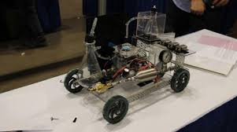
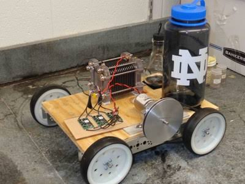
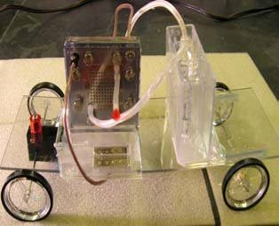

The organizing committee sent a letter in September 1908 to 600 men in the chemical profession in the United States and Canada asking for their opinions about forming a chemical engineering society. Two hundred replies were received and 70-80% were favorable. Many of the others believed the existing societies (especially the American Chemical Society) were sufficient and they did not favor forming a new society.It`s already known by designers and developers that backgrounds are one of the most important aspects in the overall design and feel of a web ...
The organizing committee decided to hold a larger, open meeting at the Hotel Belmont in New York City at which those opposed to forming the new society could present their arguments and opinions. Accordingly, they invited fifty men prominent in the chemical profession (including men that opposed the forming of a new society) to meet on January 18, 1908. Twenty-one men attended the meeting and fourteen other expressed their views in letters. After much discussion, the meeting ended without reaching a definitive decision. However, it was agreed to have a mail vote (on whether or not to form a chemical engineering society) after a complete stenographic report of the meeting was printed and sent to the fifty men that had been invited to the meeting.
 In 1905, The Chemical Engineer rounded out its first year of publication with an editorial by its founder and prominent engineer, Richard K. Meade, that propounded the question: "Why not the American Society of Chemical Engineers?" He went on to say: "The profession is now a recognized one and there are probably at least five hundred chemical engineers in this country".53-year-old Indian-origin IT professional has been arrested after he dramatically walked into a Northern California police station along with a dead body in his car and confessed to having killed three others at his apartment, over 350 kilometres away, according to US media reports
The mechanical, civil, electrical, and mining engineers in the United States each had already established a national society, so Meade's editorial was quite pertinent. But it took time for the idea to take root and Meade kept promoting it for the next two years. Finally, in 1907, he issued a call for a preliminary meeting to be held in Atlantic City in June, 1907. Some early leaders of the profession, Charles F. McKenna, William H. Walker, William Miller Booth, Samuel P. Sadtler and Thorn Smith along with about a dozen others answered Meade's call and met in Atlantic City on June 21, 1907. The meeting concluded with the formation of an organizing committee of six members: Charles F. McKenna (chairman), Richard K. Meade, William M. Booth, J.C. Olsen, William H. Walker, and Arthur D. Little.
 AIChE, American Institute of Chemical Engineers is the world’s leading organization for chemical engineering professionals, with nearly 55,000 members from more than 100 countries. AIChE has the breadth of resources and expertise you need whether you are in core process industries or emerging areas, such as nanobiotechnology.Members of AIChE enjoy access to these unique benefits: Access information and multimedia content regarding recognized and promising chemical engineering processes and methods. For example, we want to fade in a hero header on load, so we add the fade-in keyframes, setting up the animation, but then the animations starts before the background image is downloaded.